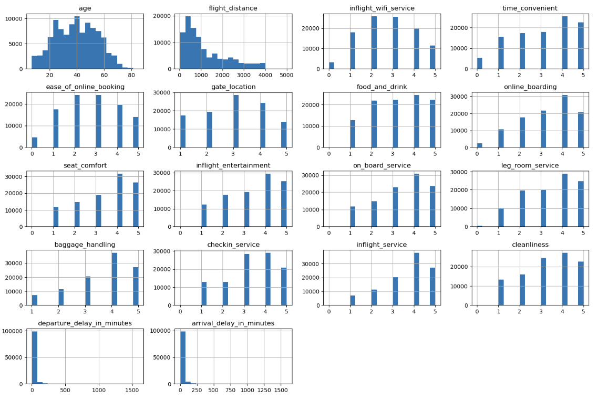
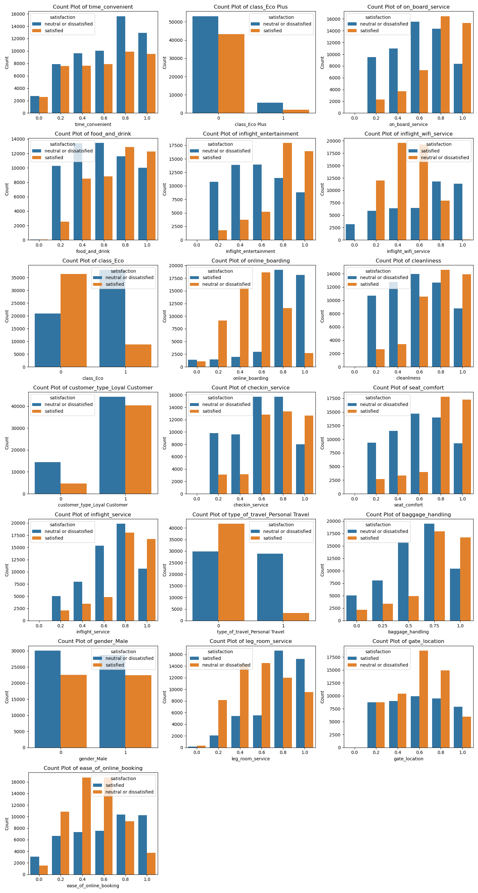
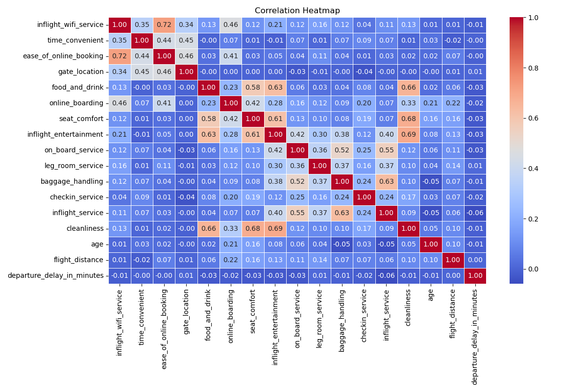
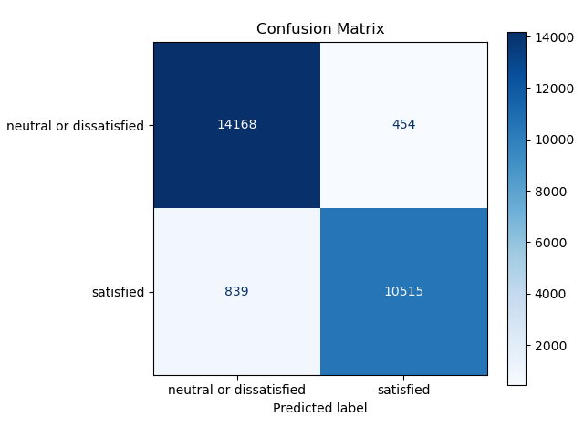

Predicting Airline Passenger Satisfaction
In this blog, we’ll explore a comprehensive analysis and modeling process aimed at predicting the satisfaction of airline passengers. We’ll delve into data preprocessing, feature engineering, and model evaluation, ultimately identifying the best machine learning algorithm to predict passenger satisfaction. Here’s how we’ll break it down:
1. Understanding the Problem
The goal of this task is to predict whether a passenger is satisfied or dissatisfied with their flight experience. The dataset we’re using contains information like flight distances, seat comfort, online boarding, and various delays. By predicting satisfaction, we aim to provide valuable insights to airlines, helping them improve customer experience and operational efficiency.
2. Data Validation
Before diving into the machine learning preprocessing, we need to ensure that the data is valid, consistent, and ready for analysis. Below are the essential data validation steps we performed during the data preprocessing phase. The data validation process included:
- Missing Value Detection and Imputation
- Outlier Detection
- Data Type Validation
- Correct Category Levels
- Checking Duplicates
- Target Variable Analysis
3. Exploring the Dataset (EDA)
We begin by examining the dataset to understand its structure. This dataset contains both numerical and categorical features related to passenger experiences. Some features include:
- Gender (categorical)
- Flight distance (numerical)
- Seat comfort (ordinal)
- Departure delay (numerical)
- Satisfaction (binary target variable: 0 = Dissatisfied, 1 = Satisfied)
We need to explore the relationships between these features and how they relate to the satisfaction of passengers.
Data Visualization:
We Plot histograms or boxplots for all numerical features to check their distribution and identify any outliers.

The numeric variables except age are mostly right skewed. So, most of them are not close to normal distribution. Additionally, for some ordinal categorical variables like seat_comfort, on_board_service and inflight_entertainment there are very little observations having value of 0. We may need to handle those observations later.
WE also used count plots to visualize the distribution of ordinal features, such as seat comfort, inflight wifi service, and others, by satisfaction. This allows us to identify any potential patterns or differences in satisfaction levels across these features.

Correlation Analysis:
Check how numerical features correlate with each other, and see if there are any strong correlations. This can be done using a correlation matrix and visualized with a heatmap.

Some features have high correlation suggesting multicollinearity. Departure Delay in Minutes vs. Arrival Delay in Minutes are very high correlated features (anomalous correlation, which suggests they both contain the same information, so one of them can be deleted).
4. Data Preprocessing
Data preprocessing is a crucial step in any machine learning project, and we follow these steps to ensure our dataset is ready for modeling:
Removing Irrelevant Features: We remove the
arrival_delay_in_minutescolumn due to its high correlation withdeparture_delay_in_minutes.Encoding Categorical Variables: We use one-hot encoding to convert categorical features like gender, customer_type, and type_of_travel into numerical representations. The satisfaction column is encoded as a binary variable (0 for dissatisfied, 1 for satisfied).
Scaling Numerical Features: Features such as age, flight_distance, and departure_delay_in_minutes are standardized using
StandardScaler. We scale ordinal features like seat_comfort usingMinMaxScalerto bring them to a similar scale, ensuring no feature dominates the others during model training.
The preprocessing pipeline is implemented using ColumnTransformer from scikit-learn. Here’s how the pipeline is structured:
from sklearn.compose import make_column_transformer
from sklearn.preprocessing import OneHotEncoder, MinMaxScaler, StandardScaler
preprocessor = make_column_transformer(
(OneHotEncoder(handle_unknown='ignore'), categorical_cols),
(MinMaxScaler(), ordinal_cols),
(StandardScaler(), numerical_cols),
('drop', drop_cols)
)4. Modeling
Now that the data is preprocessed, we can move on to modeling. Our problem is a binary classification problem, and we’ll evaluate different models to see which performs best.
Baseline Model (Dummy Classifier)
We begin by setting a baseline model using DummyClassifier. This classifier predicts the majority class (the most frequent class in the dataset), which helps us establish a baseline accuracy.The baseline model has an accuracy of 56.4%, which corresponds to the percentage of the majority class (dissatisfied passengers) in the dataset.
Comparison Models
We compare the results of our models, including the baseline DummyClassifier, Logistic Regression, and Decision Tree. The results include metrics such as accuracy, precision, recall, and F1-score for both training and validation data.
| Model | fit_time | score_time | validation_accuracy | train_accuracy | validation_precision | train_precision | validation_recall | train_recall | validation_f1 | train_f1 |
|---|---|---|---|---|---|---|---|---|---|---|
| dummy | 0.134 (+/- 0.011) | 0.472 (+/- 0.017) | 0.564 (+/- 0.000) | 0.564 (+/- 0.000) | 0.318 (+/- 0.000) | 0.318 (+/- 0.000) | 0.564 (+/- 0.000) | 0.564 (+/- 0.000) | 0.407 (+/- 0.000) | 0.407 (+/- 0.000) |
| Logistic Regression | 0.338 (+/- 0.015) | 0.475 (+/- 0.025) | 0.874 (+/- 0.003) | 0.874 (+/- 0.001) | 0.874 (+/- 0.003) | 0.874 (+/- 0.001) | 0.874 (+/- 0.003) | 0.874 (+/- 0.001) | 0.874 (+/- 0.003) | 0.874 (+/- 0.001) |
| Decision Tree | 0.519 (+/- 0.024) | 0.489 (+/- 0.020) | 0.945 (+/- 0.001) | 1.000 (+/- 0.000) | 0.946 (+/- 0.001) | 1.000 (+/- 0.000) | 0.945 (+/- 0.001) | 1.000 (+/- 0.000) | 0.945 (+/- 0.001) | 1.000 (+/- 0.000) |
As shown in the table, Decision Tree outperforms the other models in terms of accuracy and other evaluation metrics. Although it overfits to the training data, the decision tree’s interpretability makes it an excellent candidate for further tuning.
4. Hyperparameter Tuning with Grid Search
Since decision trees tend to overfit, we use Grid Search to tune the hyperparameters and reduce overfitting, specifically by adjusting the max_depth parameter.And by exploring different values for max_depth, we can find an optimal configuration that balances model complexity and performance.
5. Conclusion
In this evaluation, the decision tree model demonstrated strong performance, achieving an impressive test accuracy of 95.25%. The Classification Report showed high precision, recall, and F1-scores, especially for the “neutral or dissatisfied” class (recall of 97%). This indicates the model’s robust ability to identify dissatisfied passengers with minimal false negatives. The model’s ability to maintain balanced performance across both classes, with macro and weighted average scores of 95%, highlights its generalization capabilities.
| Neutral or Dissatisfied | Satisfied | Accuracy | Macro Avg | Weighted Avg |
|---|---|---|---|---|
| 0.944092757 | 0.95861063 | 0.950223283 | 0.951351693 | 0.950438458 |
| 0.968950896 | 0.926105337 | 0.950223283 | 0.947528117 | 0.950223283 |
| 0.956360323 | 0.942077678 | 0.950223283 | 0.949219 | 0.950117439 |
| 14622 | 11354 | 0.950223283 | 25976 | 25976 |
The Confusion Matrix revealed that while the model performs well overall, there are areas to enhance, such as reducing false positives for the “satisfied” class. Adjusting the decision threshold or rebalancing the data could improve recall for this class.

The Precision-Recall and ROC curves also reinforced the model’s consistency and effectiveness in distinguishing between “satisfied” and “neutral or dissatisfied” passengers, with a high AUC score of 0.98.

6. Summary and Final Thoughts
In summary, the decision tree model offers a reliable tool for predicting passenger satisfaction with US airlines. With further fine-tuning, additional feature exploration, and interpretability methods, it can be improved to provide even more accurate and actionable insights for the airline industry.
7.References
- D, John. 2018. “Passenger Satisfaction.” Kaggle Dataset.
- Eshaghi, M. Sadegh, Mona Afshardoost, Gui Lohmann, and Brent D. Moyle. 2024. “Drivers and Outcomes of Airline Passenger Satisfaction: A Meta-Analysis.” Journal of the Air Transport Research Society 3: 100034. DOI.
- Hunter, J. D. 2007. “Matplotlib: A 2D Graphics Environment.” Computing in Science & Engineering 9 (3): 90–95. DOI.
- Klein, TJ. 2020. “Airline Passenger Satisfaction.” Kaggle Dataset.
- McKinney, Wes. 2010. “Data Structures for Statistical Computing in Python.” In Proceedings of the 9th Python in Science Conference, edited by Stéfan van der Walt and Jarrod Millman, 51–56.
- Namukasa, J. 2013. “The Influence of Airline Service Quality on Passenger Satisfaction and Loyalty: The Case of Uganda Airline Industry.” The TQM Journal 25 (5): 520–32. DOI.
- Pedregosa, F., G. Varoquaux, A. Gramfort, V. Michel, B. Thirion, O. Grisel, M. Blondel, et al. 2011. “Scikit-Learn: Machine Learning in Python.” Journal of Machine Learning Research 12: 2825–30.
- Van Rossum, Guido, and Fred L Drake Jr. 1995. Python Reference Manual. Centrum voor Wiskunde en Informatica Amsterdam.
8.Appendix:
Reproducibility
Ensuring the reproducibility of our project is essential for transparency and for others to be able to replicate and build upon our work. Below, we outline the key elements that make this project reproducible.
Our Repository
Usage
To run the analysis in a dedicated computational environment set up using Docker, please follow these steps:
Step 1: Clone the repository Outlined are 2 options for cloning the repository- through https or ssh.
Note: The instructions contained in this section assume the commands are executed in a unix-based shell.
Using Https:
git clone https://github.com/UBC-MDS/airline-customer-satisfaction-predictor.gitUsing SSH:
git clone git@github.com:UBC-MDS/airline-customer-satisfaction-predictor.gitStep 2: Setup Docker Computational Environment
Navigate to the root directory of the project:
In the terminal/command line navigate to the root directory of your local copy of this project.bash cd <repo_directory>Launch the docker container image for the computational environment:
docker-compose up- The terminal logs should display an output similar to: Jupyter Server 2.14.2 is running at:
- Locate the URL starting with
http://127.0.0.1:8888/lab?token=and click (or copy and paste in the browser) on the http address in the logs to access the Jupyter application from your web browser.
Example link:http://127.0.0.1:8888/lab?token=9f22c04a7fe732fdb2d2d98f1c2c0b74a89a5a6a1d60b45b
Step 3: Run the Analysis
The first method (Recommended):
In the root directory of the project run the following:
make allThe Makefile will run all the necessary files to generate the results and the report. This is the recommended option because it checks if all the dependencies have generated for each consecutive step.
Additionally, if you want to erase everything generated, you can run the following:
make clean